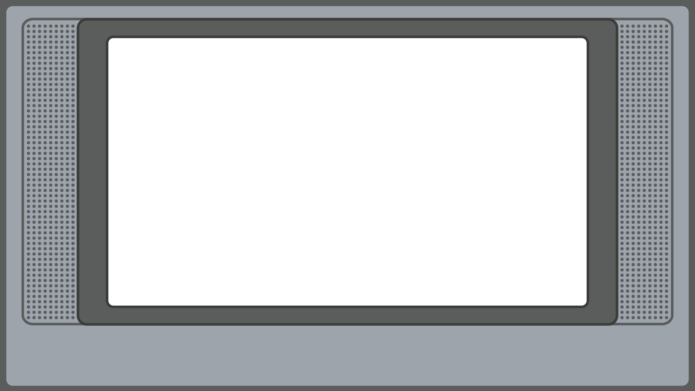

Questa è una macchina del tempo televisiva, pensata per riportarti direttamente agli anni 2000.
Qui troverai cartoni, serie TV, pubblicità, varietà e spezzoni tra il 2002 e il 2012.
Su mobile ruota il telefono in orizzontale.
Ispirato da MyRetroTVs.com
